Auxiliar 22: Faraday-Lenz II
Aplicaciones avanzadas de la ley de Faraday-Lenz: fem inducida en circuitos móviles, campo eléctrico inducido dentro y fuera de solenoides, inductancia mutua entre circuitos y autoinductancia. Se conectan las formas diferencial e integral de la tercera ecuación de Maxwell con situaciones concretas.
Temas que cubre
- Fem inducida por movimiento: carrito conductor que penetra una región con campo magnético uniforme $\vec{B} = B_0\hat{z}$
- Corriente inducida $I = \mathcal{E}/R$ y sentido determinado por la ley de Lenz
- Fuerza de frenado magnético $\vec{F} = I\vec{l}\times\vec{B}$ y ecuación de movimiento del carrito
- Velocidad exponencialmente decreciente: $v(t) = v_0 e^{-t/\tau}$ con $\tau = mR/(B_0^2 l^2)$
- Inductancia mutua $M$: relación entre flujo inducido y corriente fuente ($\Phi_2 = M I_1$)
- Autoinductancia $L$ y EDO de circuito RL con fem motriz y autoinducida
- Campo eléctrico inducido dentro y fuera de un solenoide largo con corriente variable $I(t) = I_0\sin(\omega t)$
- Formas diferencial e integral de Faraday: $\nabla\times\vec{E} = -\partial\vec{B}/\partial t$ y $\oint_\Gamma \vec{E}\cdot d\vec{l} = -\partial\Phi/\partial t$
Conceptos clave
Fem motriz por movimiento
Cuando un conductor de largo $l$ se mueve con velocidad $v$ dentro de un campo $\vec{B}$ perpendicular, la fem inducida es $\mathcal{E} = Blv$. El flujo aumenta como $\Phi = B_0 l x$, de modo que $\mathcal{E} = -d\Phi/dt = -B_0 l \dot{x}$. El signo negativo (Lenz) indica que la corriente se opone al aumento del flujo.
Frenado magnético
La corriente inducida $I = B_0 lv/R$ en presencia del campo produce una fuerza de freno $F = -B_0^2 l^2 v / R$ que se opone al movimiento. Esto lleva a una EDO de primer orden cuya solución es una caída exponencial de la velocidad.
Inductancia mutua
Cuando el campo $\vec{B}$ del carrito es producido por un circuito externo con corriente $I_0$, el flujo a través del carrito es proporcional a la corriente: $\Phi = M I_0$. La constante de proporcionalidad $M$ depende solo de la geometría y en este caso crece con la distancia penetrada $x$.
Circuito RL con autoinductancia
Al incluir una bobina de autoinductancia $L$ en serie con la resistencia $R$, la fem total es $\mathcal{E}_\text{total} = \mathcal{E}_\text{motriz} - L\,dI/dt$. Esto da una EDO de primer orden para $I(t)$ que combina el término motriz $B_0 l v(t)$ con el término inductivo.
Campo eléctrico inducido en solenoide
Un solenoide con corriente variable genera un campo $\vec{B}(t)$ variable que induce un campo eléctrico $\vec{E}$ circulante, incluso en regiones sin corriente. Por simetría cilíndrica, $\vec{E}$ es azimutal ($\hat{\phi}$). Dentro del solenoide $E \propto r$; fuera, $E \propto 1/r$.
Ley de Lenz y conservación de energía
El signo negativo en $\mathcal{E} = -d\Phi/dt$ no es arbitrario: garantiza que la corriente inducida genere un campo que se opone al cambio que la originó. Esto es consistente con la conservación de energía: la energía cinética del carrito se disipa en la resistencia $R$.
Fórmulas fundamentales





Qué hay que entender
- Identificar qué cambia: ¿varía el área del circuito (conductor móvil) o varía $\vec{B}$ (solenoide con corriente alterna)?
- Calcular el flujo $\Phi = \iint \vec{B}\cdot d\vec{S}$ antes de derivar. Para el carrito: $\Phi = B_0 l x$, así $\mathcal{E} = -B_0 l \dot{x} = -B_0 l v$.
- Aplicar la ley de Lenz para el sentido: si el flujo (en $\hat{z}$) aumenta al avanzar el carrito, la corriente inducida genera un campo opuesto, es decir, circula en sentido antihorario visto desde $+\hat{z}$.
- Para el campo inducido en el solenoide: usar el camino de Faraday circular coaxial al eje. Dentro ($r < b$): $\oint \vec{E}\cdot d\vec{l} = E \cdot 2\pi r = -\dot{B}\pi r^2$. Fuera ($r > b$): el área que aporta flujo está limitada por $b$, así que $E \cdot 2\pi r = -\dot{B}\pi b^2$.
- Para circuitos con $L$: escribir el balance de voltaje (Kirchhoff): $\mathcal{E}_\text{motriz} = RI + L\,dI/dt$. Con $v(t) = at$ la fuente es $B_0 l a t$ y la EDO es lineal de primer orden con coeficientes constantes.
- La inductancia mutua $M = \Phi_\text{inducido}/I_\text{fuente}$ puede obtenerse directamente del flujo geométrico: $M = B_0 l x / I_0$. Nota que $M$ crece con $x$, lo que implica $\mathcal{E}_2 = -M \dot{I}_1 - \dot{M} I_1$ si ambos varían.
- La solución $v(t) = v_0 e^{-t/\tau}$ con $\tau = mR/(B_0^2 l^2)$ se obtiene de $m\dot{v} = -(B_0^2 l^2/R)v$, que es separable. Verificar unidades: $[B^2 l^2 / R] = \text{kg/s}$.